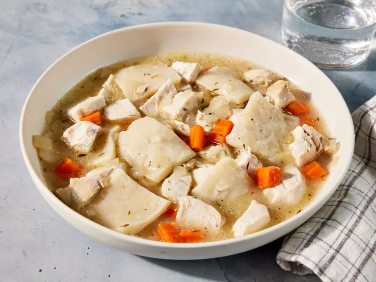

Momma's Best Chicken and Dumplings

There's a lot of love in those dumplings! This is comfort food at its best and so worth the time and effort. I love the ohhs, awws, and OMGs, smiles, and sighs of total satisfaction that come with this bowl of heaven.
Ingredients
- ¼ cup butter
- 2 ribs celery, quartered
- 1 large carrot, quartered
- 1 small onion, chopped
- 1 teaspoon mashed garlic
- 2 large bay leaves
- ½ teaspoon dried thyme
- ½ teaspoon salt
- ½ teaspoon ground black pepper
- ⅛ teaspoon poultry seasoning
- 2 pounds bone-in chicken breasts
- water to cover
- 2 tablespoons self-rising flour (such as White Lily®)
- 2 cups self-rising flour (such as White Lily®)
- ¼ cup cold shortening
- ¼ cup chicken broth, slightly chilled
Steps
- Gather all ingredients.
- Melt butter in a stock pot over medium-high heat. Add celery, carrot, onion, garlic, bay leaves, thyme, salt, pepper, and poultry seasoning; cook and stir until flavors combine, about 5 minutes.
- Push vegetable mixture to the sides and add chicken; cook until browned, 3 to 5 minutes per side.
- Pour enough water over the chicken to cover by 3 inches; bring to a boil. Stir, scraping the browned bits off of the bottom of the pot. Reduce heat; simmer until chicken is tender, about 1 hour.
- Transfer chicken and carrots to a serving plate with a large slotted spoon; let cool.
- Ladle 1/4 cup cooking liquid into a bowl; cool slightly, about 5 minutes. Mix in 2 tablespoons flour. Stir back into the pot.
- Place 2 cups flour in a large bowl; cut in shortening with 2 knives until mixture forms pea-sized bits. Mix in chilled chicken broth until dough is combined.
- Turn dough out onto a floured work surface. Knead 5 to 6 times; pat down to 1-inch thickness. Sprinkle lightly with flour; roll out to about 1/8-inch thickness. Cut dough into squares with a sharp knife.
- Drop squares, in batches, into simmering cooking liquid, moving squares to the side with each addition. Partially cover pot; simmer until dumplings are firm, about 12 minutes. Separate any dumplings that stick together. Remove from heat; keep covered.
- Bone chicken; cut into bite-sized pieces and return to the pot. Chop carrot; return to the pot. Cool chicken and dumplings, about 30 minutes, before serving.
- Enjoy!
Home Page